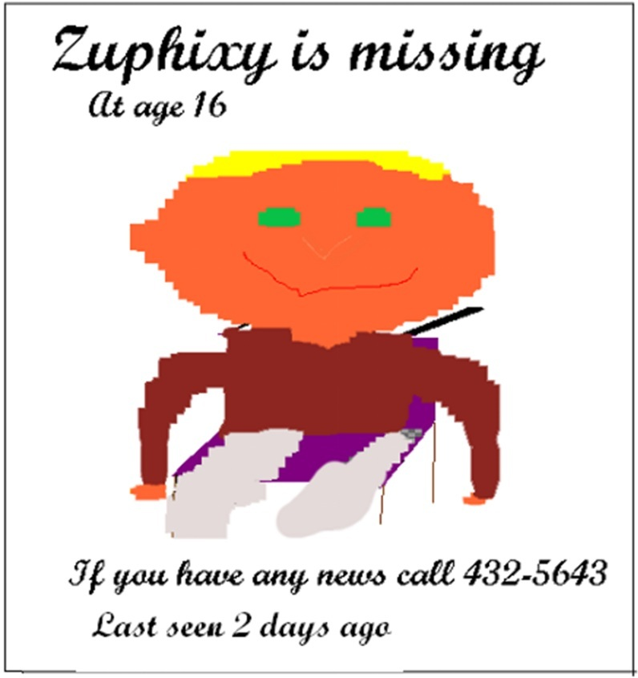

Meanwhile, after Zuphixy had disappeared from his room, Rugger, Zuphixy’s guide dog started to howl. That woke up Zuphixy’s parents. Now this may seem normal to most dog owners, but it was the first time that Rugger had ever howled since they got him. Zuphixy’s parents came running into their son’s room to see what could cause Rugger to act in such an unusual manner.
At first they did not see anything out of the ordinary in Zuphixy’s room except the way that Rugger was acting. So Zuphixy’s Dad decided to let Rugger outside. But Rugger started scratching the door, which he had never done before.
As time passed by they started to wonder where Zuphixy was. He was not in his room or in the kitchen or in the living room or anywhere in the house. This made them worried because Zuphixy never went out of the house without Rugger.
They took Rugger for a walk in the same direction as their son usually went when he took Rugger for his morning walk. But Zuphixy was nowhere to be found along that route.
Then they walked the other way into town and came to a railroad crossing. They found a wheelchair stuck in the track with no one in the chair. At first from the distance they thought that their son had fallen out of his chair. But when they got beside the chair, they saw that it belonged to an old lady who had fallen out. Zuphixy’s mother felt bad for her so she helped the old lady to the hospital.
By the time they got back home it was lunchtime. They ate their lunch and discussed what they should do next in finding out where Zuphixy may have gone.
It was decided that they should phone all of Zuphixy’s friends and check out the local swimming pool to see if he had been at the pool. His mom spent the rest of the day on the phone. By the end of the day she had no clues as to where Zuphixy might have gone. “Well, there is nothing we can do except to wait the 24 hours before going to the Police,” said Zuphixy’s father. “And tomorrow I must go to work,” he added.
The next day Zuphixy’s Father left early in the morning to go to work. He had an uneventful day with time to spare. In his free time he made up some posters to hang around town. The posters asked if anyone had seen Zuphixy in the last 2 days and requested people to call if they had any news of where Zuphixy has been.

The next day Zuphixy’s parents went to town and spent the whole day hanging up the posters. That evening they got a phone call from the police chief who had seen a poster and asked them to come tomorrow at 9:00 A.M to make plans as to how to set up a search team led by the police.
The next morning Zuphixy’s parents went to the police station and filled in the forms that needed to be filled in for a missing person.
The police chief asked for the most up-to-date description of Zuphixy so they would know what to look for.
Zuphixy’s parents said, “From what we can tell he is wearing his light gray sweat pants with a red sweater and he is in his royal purple wheelchair.”
“Was he mad at one of you or something to run away?” asked the police chief.
“No, he was very happy and had no reason that we know of to run away — especially without Rugger, his guide dog.”
“What color hair does he have and what color eyes does he have?” asked the police chief.
Zuphixy’s mother, who was getting frustrated that the police chief could not remember what the poster had said replied, “As you saw on the poster, he has golden hair and green eyes.”
“Does he ever wear glasses?”
“No, he does not even own a pair of glasses.”
“Did he have money to buy a ticket for a plane or bus or train?”
Zuphixy’s father replied, “Not that we know of. But he does have a lot of friends who could have given him a ticket for a free trip somewhere.”
The police chief phoned around and found that there was no record of Zuphixy taking any public transportation in the last three days.
After Zuphixy’s parents had spent three hours at the police station, the police chief said, “Thank you. We will start the search tomorrow after we have found twenty people. Everyone will need to be ready to go about 10:30 in the morning.”
The next morning twenty-two people met at the police station and started the search for Zuphixy. For the first two days they found nothing. Everyone was starting to feel that it was no use until on the third day someone saw tracks that looked like wheelchair tracks. They all followed the tracks for a whole day only to find it was just two bikes.
After two whole weeks of searching the police chief declared that it was hopeless to keep searching. Zuphixy’s parents went sadly home.